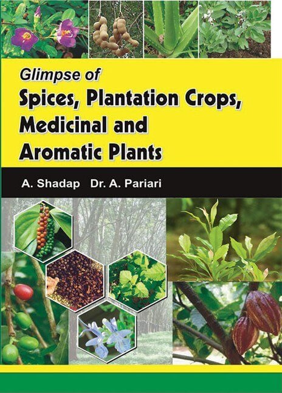
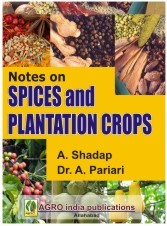
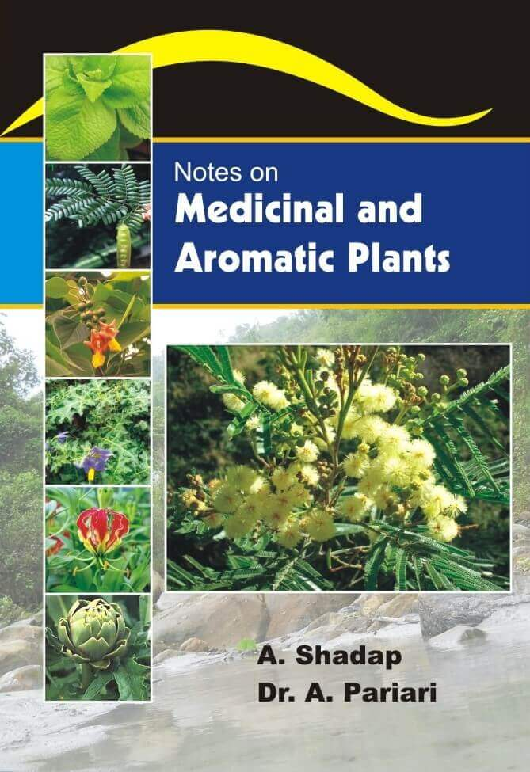

Glimpse of Spices, Plantation Crops, Medicinal and Aromatic Plants
Written By : By A. Shadap & Dr. A. Pariari
288.80

Notes on Spices and Plantation Crops
Written By : By Dr. A. Shadap & Dr. A. Pariari
140

Notes on Medicinal and Aromatic Plants
Written By : By Dr. A. Shadap & Dr. A. Pariari
140